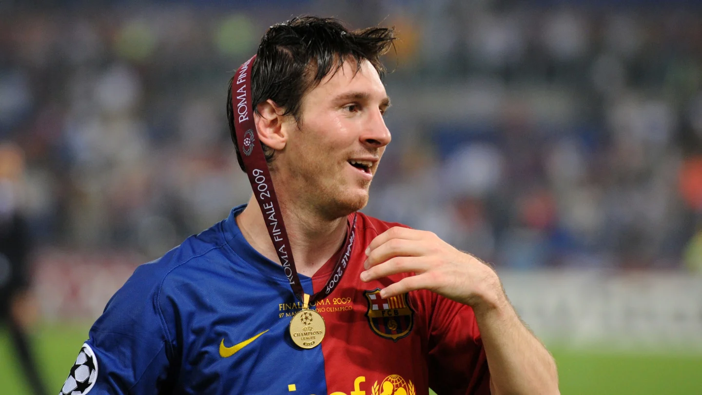

¿Como comenzo?
La UEFA Champions League, antes conocida como la Copa de Europa, nació en 1955 con el propósito de reunir a los campeones de las ligas europeas en una competición sin precedentes. Desde entonces, ha experimentado un crecimiento exponencial en términos de popularidad y participantes, convirtiéndose en el torneo de clubes más prestigioso del continente. En este trabajo, exploraremos los inicios de esta competición y su evolución a lo largo del tiempo.
Inicios (1955-65)
La Copa de Europa, precursora de la actual UEFA Champions League, se estableció en 1955 con el objetivo de reunir a los campeones de las ligas nacionales de fútbol de Europa en una competición de clubes. Durante sus primeros años, desde 1955 hasta 1965, la competición tuvo un formato y alcance limitado, pero sentó las bases para el desarrollo de uno de los torneos más prestigiosos del mundo.
En su primera edición, participaron 16 equipos, representando a diferentes países europeos. El Real Madrid, liderado por figuras icónicas como Alfredo Di Stéfano y Francisco Gento, se proclamó campeón en las primeras cinco ediciones de la competición (1956-1960). Estos logros establecieron al Real Madrid como uno de los clubes más exitosos en la historia del torneo y ayudaron a cimentar su reputación como una potencia futbolística.
Durante esta primera década, se destacaron otros clubes como el Benfica de Portugal, que ganó dos títulos consecutivos en 1961 y 1962, y el Inter de Milán de Italia, que se alzó con la victoria en 1964 y 1965. Aunque la competición aún no contaba con la participación de los subcampeones de las ligas, cada edición presentaba emocionantes enfrentamientos entre los campeones nacionales en busca del título continental.
El formato de la competición en estos primeros años consistía en una fase de eliminación directa, donde los equipos se enfrentaban en una serie de partidos de ida y vuelta. No fue hasta 1960 cuando se introdujo la fase de grupos en la competición, permitiendo a los equipos jugar contra más oponentes antes de alcanzar las rondas finales.

Los últimos años antes de la reforma (1985-92)
En 1985, la competición fue rebautizada como la Copa de Europa de la UEFA y se introdujeron algunas modificaciones significativas. Una de ellas fue la inclusión de clubes que no necesariamente habían ganado sus ligas nacionales, sino que también podían clasificar a través de su rendimiento en competiciones domésticas anteriores. Esto permitió una mayor diversidad de equipos y un nivel de competencia más alto en la competición.
Además, se implementó el sistema de grupos en la fase inicial del torneo, donde los equipos se agrupaban en diferentes grupos y se enfrentaban en partidos de ida y vuelta. Los mejores equipos de cada grupo avanzaban a las etapas eliminatorias, lo que brindaba más oportunidades para los clubes y generaba una mayor emoción y tensión en los partidos.
Durante este período, clubes como el AC Milan, el PSV Eindhoven y el Estrella Roja de Belgrado tuvieron éxito en la competición. El AC Milan, dirigido por el entrenador Arrigo Sacchi, ganó el título en dos ocasiones consecutivas en 1989 y 1990, mostrando un fútbol ofensivo y dominante. El PSV Eindhoven también logró el campeonato en 1988, liderado por el talentoso delantero Ruud Gullit.
Además de los cambios en el formato y los nuevos campeones, este período también fue notable por las actuaciones individuales sobresalientes de jugadores como Marco van Basten, Ruud Gullit, Michel Platini y Diego Maradona, quienes dejaron su huella en la competición con goles y jugadas memorables.
Estos años previos a la reforma sentaron las bases para la transformación de la Copa de Europa en la UEFA Champions League, que se produjo en 1992. Estos cambios fueron impulsados por el deseo de expandir y comercializar la competición, lo que llevó a un aumento en el número de equipos participantes y la creación de una fase de grupos más amplia, proporcionando un escenario aún más emocionante y competitivo para los clubes europeos.

La nueva denominación trae la época más igualada (1992-09)
La introducción de la UEFA Champions League en 1992 trajo cambios al formato de la competición, incluyendo la fase de grupos previa a la final. En la edición de 1993, el Olympique de Marsella ganó el título, pero se vio envuelto en un escándalo de sobornos que le impidió defender su título al año siguiente. En 1994, el Milan A.C. se impuso al F.C. Barcelona en la final por 4-0. En las siguientes ediciones, el Milan A.C. llegó a la final en tres ocasiones, pero perdió ante el A.F.C. Ajax y la Juventus F.C. respectivamente. Estos años destacaron por los cambios en el formato y finales emocionantes que marcaron la evolución de la competición.
